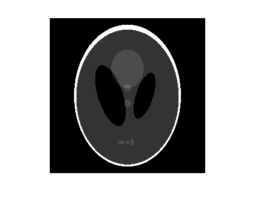
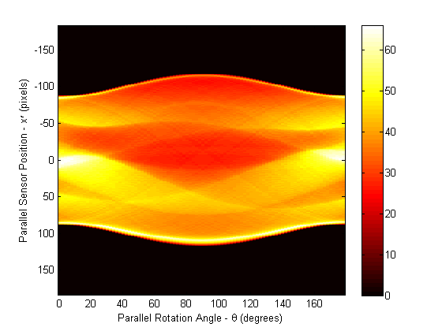
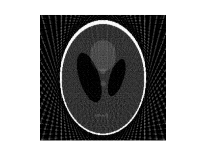
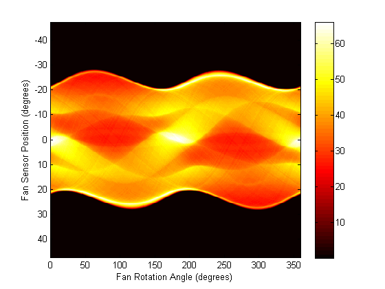
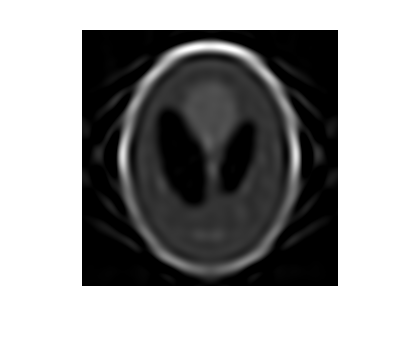

投影データからイメージを復元
このデモは、radon、iradon、fanbeam、および ifanbeam を使用して、サンプル イメージの投影を行い、映像からイメージを復元する方法を示します。radon と iradon は、投影にパラレル ビーム形状を使用するのに対し、fanbeam と ifanbeam はファンビーム形状を使用します。パラレル ビームとファンビームの形状を比較するために、下記の例は、各形状に対する合成投影を作成し、これらの合成投影を使用して元のイメージを復元します。
イメージの復元が必要な実際のアプリケーションは X 線による吸収断層撮影で、異なる角度で物理的な標本を通過する放射線減衰の測定により投影が行われます。オリジナル イメージは、密度が強度値によって表される標本の断面であると考えることができます。映像は特殊な医療撮像装置で収集され、標本の内部イメージは iradon または ifanbeam を使用して復元されます。
関数 iradon は、パラレル ビーム投影によりイメージを復元します。パラレル ビーム形状では、各投影は、指定した角度でイメージを通った一連の線積分を組み合わせて形成されます。関数 ifanbeam は、ファンビーム投影からイメージを復元します。ファンビーム投影には 1 つのエミッターと複数のセンサーがあります。
両方の形状を説明する図については、『Image Processing Toolbox™ ユーザーズ ガイド』を参照してください。
目次
頭蓋骨の作成
テスト イメージは Shepp-Logan の頭蓋骨で、関数 phantom を使用して作成できます。頭蓋骨イメージは、人頭の実際の断層撮影イメージで見られるさまざまな要素を示します。外側の明るい楕円の外殻は頭蓋骨と考えられ、内部の多くの楕円は脳の特徴または腫瘍と考えられます。
P = phantom(256); imshow(P)
パラレル ビーム - 合成投影の計算
パラレル ビーム形状を使用して合成投影を計算し、投影角度をさまざまに変えます。radon の各呼び出しでは、配列が出力され、各列はいずれかの角度で対応する theta のラドン変換になります。
theta1 = 0:10:170; [R1,xp] = radon(P,theta1); num_angles_R1 = size(R1,2)
num_angles_R1 =
18
theta2 = 0:5:175; [R2,xp] = radon(P,theta2); num_angles_R2 = size(R2,2)
num_angles_R2 =
36
theta3 = 0:2:178; [R3,xp] = radon(P,theta3); num_angles_R3 = size(R3,2)
num_angles_R3 =
90
各角度で、投影は xp 軸沿いの N ポイントで計算されます。N は、可能なすべての投影角度で各ピクセルが投影されるように、イメージの対角距離に基づく定数です。
N_R1 = size(R1,1) N_R2 = size(R2,1) N_R3 = size(R3,1)
N_R1 = 367 N_R2 = 367 N_R3 = 367
そのため、小さな頭蓋骨を使用する場合は、xp 軸のポイントを少なくして計算する必要があります。
P_128 = phantom(128); [R_128,xp_128] = radon(P_128,theta1); N_128 = size(R_128,1)
N_128 = 185
投影データ R3 を表示します。元の頭蓋骨イメージの一部の特徴が R3 のイメージで見られます。R3 の最初の列は 0 度での投影に対応し、水平方向に積分します。真ん中の列は 90 度での投影に対応し、垂直方向に積分します。90 度での投影は、頭蓋骨の最も外側の楕円の垂直半軸が長いため、0 度での投影に比べてプロファイルの幅が広くなります。
figure, imagesc(theta3,xp,R3) colormap(hot) colorbar xlabel('Parallel Rotation Angle - \theta (degrees)'); ylabel('Parallel Sensor Position - x\prime (pixels)');
パラレル ビーム - 投影データから頭蓋骨を復元
各復元のパラレル回転の増分 dtheta を上記合成投影で使用した増分と一致させます。実際には、トランスミッターとセンサーの形状はわかりますが、ソース イメージ P は認識されません。
次の 3 つの復元 (I1、I2、および I3) では、投影を行う角度を変えたときの影響を示します。I1 と I2 では、オリジナルの頭蓋骨で見られた特徴が不明瞭です。特に、各イメージの底部にある 3 つの楕円を見てください。I3 の結果は、オリジナル イメージ P によく似ています。
I1 と I2 には大きなアーチファクトがあります。これらのアーチファクトを回避するには、角度のステップを増やします。
% Constrain the output size of each reconstruction to be the same as the % size of the original image, |P|. output_size = max(size(P)); dtheta1 = theta1(2) - theta1(1); I1 = iradon(R1,dtheta1,output_size); figure, imshow(I1)
dtheta2 = theta2(2) - theta2(1); I2 = iradon(R2,dtheta2,output_size); figure, imshow(I2)
dtheta3 = theta3(2) - theta3(1); I3 = iradon(R3,dtheta3,output_size); figure, imshow(I3)
ファン ビーム - 合成投影の計算
ファンビーム形状を使用して合成投影を計算し、'FanSensorSpacing' をさまざまに変えます。
D = 250; dsensor1 = 2; F1 = fanbeam(P,D,'FanSensorSpacing',dsensor1); dsensor2 = 1; F2 = fanbeam(P,D,'FanSensorSpacing',dsensor2); dsensor3 = 0.25; [F3, sensor_pos3, fan_rot_angles3] = fanbeam(P,D,... 'FanSensorSpacing',dsensor3);
投影データ F3 を表示します。ファン回転角の範囲は 0 ～ 360 度で、同じ特徴が両側からサンプリングされているため、180 度のオフセットの位置で同じパターンが得られます。このファンビーム投影イメージの特徴を上記のパラレル ビーム投影イメージの同じ特徴と相互に関連付けることができます。
figure, imagesc(fan_rot_angles3, sensor_pos3, F3) colormap(hot) colorbar xlabel('Fan Rotation Angle (degrees)') ylabel('Fan Sensor Position (degrees)')
ファンビーム - 投影データから頭蓋骨を復元
各復元のファンとセンサーの間隔を、合成投影の作成時に使用した間隔と一致させます。実際には、トランスミッターとセンサーの形状はわかりますが、ソース イメージ、P の形状はわかりません。
'FanSensorSpacing' の値を変えると、各回転角で使用するセンサーの数が変更されます。これらのファンビーム復元では、同じ回転角を使用します。これは、その都度異なる回転角を使用するパラレル ビーム復元とは対照的です。
'FanSensorSpacing' は、fanbeam と ifanbeam を使用するときに制御できる複数のパラメーターの中の 1 つにすぎないことに注意してください。また、関数 fan2para と para2fan を使用して、パラレル ビーム投影データとファンビーム投影データを切り替えることもできます。
Ifan1 = ifanbeam(F1,D,'FanSensorSpacing',dsensor1,'OutputSize',output_size); figure, imshow(Ifan1)
Ifan2 = ifanbeam(F2,D,'FanSensorSpacing',dsensor2,'OutputSize',output_size); figure, imshow(Ifan2)
Ifan3 = ifanbeam(F3,D,'FanSensorSpacing',dsensor3,'OutputSize',output_size); figure, imshow(Ifan3)